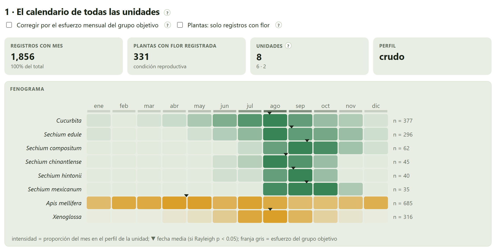
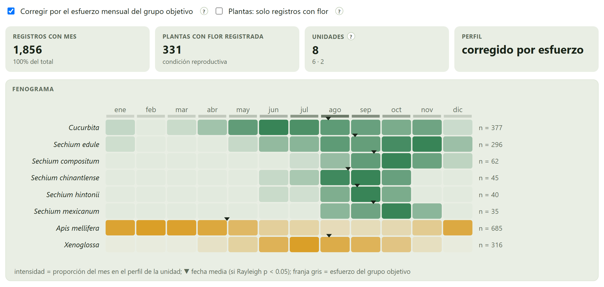
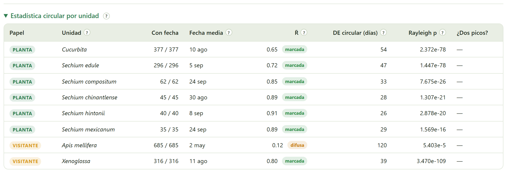
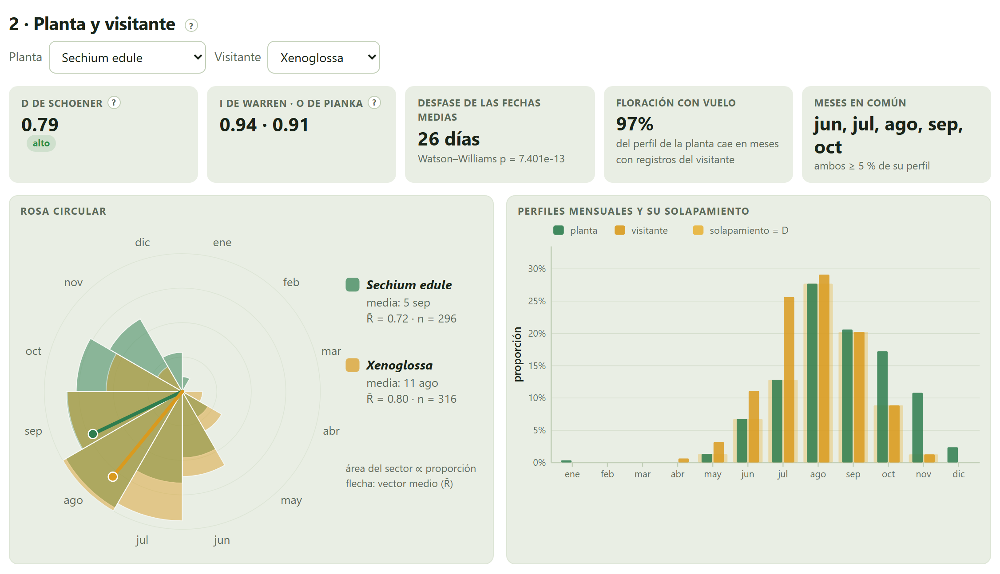
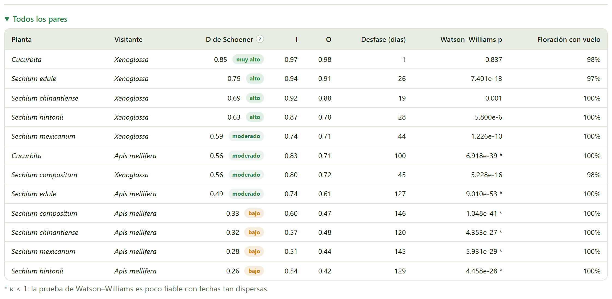
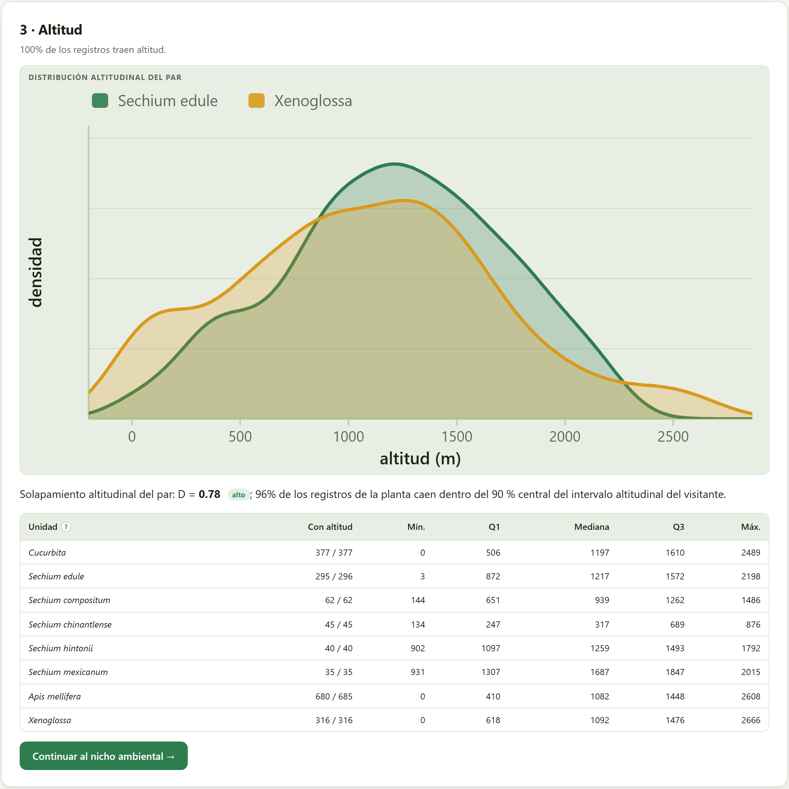

¿Vuela el visitante cuando la planta florece, y a la misma altitud? Las fechas de los registros se leen como estadística circular —el año es un círculo—: fecha media, concentración, estacionalidad y diferencia entre calendarios. Los perfiles mensuales se comparan con los mismos índices de solapamiento que el nicho, con la opción de corregir por el esfuerzo de muestreo de cada mes. Y la altitud se compara con densidades a lo largo del gradiente.
El 31 de diciembre y el 1 de enero están a un día. Tratar las fechas como números de 1 a 365 hace que una planta que florece de noviembre a febrero tenga su «media» en junio. La estadística circular convierte cada fecha en un ángulo y resuelve el problema (Batschelet 1981; Fisher 1993; Morellato et al. 2010).
El día d equivale al ángulo θ = 2π(d − ½)/365. La fecha media es la dirección del vector promedio de todos los registros y su longitud R̄, de 0 a 1, mide la concentración: 1 si todos caen el mismo día, 0 si se reparten por igual en el año. La desviación estándar circular, en días, es su versión más intuitiva. La prueba de Rayleigh dice si la distribución es estacional (p pequeña) o uniforme; la de Watson–Williams, si dos calendarios tienen la misma fecha media (Zar 2010), y exige que no estén demasiado dispersos (κ ≥ 1).
Un registro con fecha no dice necesariamente que la planta estaba en flor: un ejemplar de herbario puede ser vegetativo o con fruto. Por eso la casilla Plantas: solo registros con flor usa solo los registros cuya condición reproductiva dice flor o antesis. Y el número de registros por mes refleja también cuándo se sale al campo: la casilla Corregir por el esfuerzo mensual del grupo objetivo divide cada perfil entre los registros de todo el estudio en ese mes (sección 6.2).

Los recuadros dicen cuántos registros traen mes (los 1,856 depurados, el 100 %), cuántas plantas tienen flor registrada en su condición reproductiva (331), cuántas unidades entran (6 plantas y 2 visitantes) y si el perfil es crudo o corregido. En el fenograma se ve lo esencial de un vistazo: las cinco especies de Sechium y las calabazas florecen de julio a octubre; Xenoglossa vuela de junio a septiembre; la abeja melífera se registra todo el año.

Corregir divide la fracción de cada mes entre el esfuerzo de ese mes, y los meses con muy pocos registros de todo el estudio (menos de cinco) se dejan en cero para no dividir entre casi nada. Aun así, con pocos registros la corrección amplifica el ruido, como en la Figura 6.2. La corrección cambia los perfiles mensuales y los índices de solapamiento; la fecha media y R̄ se calculan siempre con las fechas de los registros. Reporta el resultado crudo y el corregido, y di cuál usas para concluir.

| Columna | Qué dice |
|---|---|
| Con fecha | Cuántos registros de la unidad entran, de cuántos tiene. |
| Fecha media | La dirección del vector medio, en día y mes. |
| R̄ | La concentración, con su etiqueta: difusa, moderada o marcada. |
| DE circular (días) | La dispersión alrededor de la fecha media. |
| Rayleigh p | Si hay estacionalidad. Con cientos de registros casi siempre es muy pequeña: mira R̄. |
| ¿Dos picos? | «posible» cuando la segunda armónica es fuerte (R̄₂ > 0.3 y mayor que R̄ + 0.15): dos floraciones al año, o dos poblaciones con calendarios distintos. Con dos picos, la fecha media cae entre ellos y no describe a ninguno. |
| Si R̄ < 0.3 | entonces la unidad se registra casi todo el año o tiene dos temporadas (difusa): su fecha media dice poco y no conviene compararla con Watson–Williams. |
| Si R̄ está entre 0.3 y 0.6 | entonces hay una temporada preferida, pero amplia (moderada). |
| Si R̄ > 0.6 | entonces hay una temporada definida (marcada) y la fecha media la resume bien. |
La ficha ? de R̄ trae esta escala. Son convenciones de lectura, no leyes.
La segunda tarjeta compara una planta con un visitante, elegidos en sus dos selectores.

| Recuadro | Qué dice | Chayote × Xenoglossa |
|---|---|---|
| D de Schoener | La fracción de los dos calendarios que se comparte: Σ mín(pᵢ, qᵢ) sobre los doce meses, de 0 a 1 (Schoener 1968). | 0.79 · alto |
| I de Warren · O de Pianka | Dos índices de solapamiento más benévolos con las diferencias pequeñas (Warren et al. 2008; Pianka 1973). Se reportan junto a la D. | 0.94 · 0.91 |
| Desfase de las fechas medias | Los días entre las dos fechas medias, con la p de Watson–Williams. | 26 días · p ≈ 7 × 10⁻¹³ |
| Floración con vuelo | Qué fracción del perfil de la planta cae en meses con registros del visitante. | 97 % |
| Meses en común | Los meses en que los dos tienen al menos el 5 % de su perfil. | jun a oct |
La lectura es la de la sección 1.4: el chayote de práctica florece en promedio el 5 de septiembre y Xenoglossa vuela en promedio el 11 de agosto; con cientos de registros, ese desfase de 26 días es muy significativo, y sin embargo el 97 % de la floración cae en meses con abejas volando y los dos calendarios comparten el 79 % de su perfil. El visitante se adelanta a la planta, pero la acompaña.

| Si D < 0.2 | entonces solapamiento nulo o muy limitado: floración y vuelo casi no coinciden. |
| Si D está entre 0.2 y 0.4 | entonces bajo. |
| Si D está entre 0.4 y 0.6 | entonces moderado. |
| Si D está entre 0.6 y 0.8 | entonces alto. |
| Si D > 0.8 | entonces muy alto: los calendarios son casi el mismo. |
La escala es la de Rödder y Engler (2011) para el nicho, aplicada al calendario. Un generalista de todo el año (la abeja melífera) tiene D moderada con casi todas las plantas porque su perfil se reparte: lee siempre la D junto con la floración con vuelo.
⤓ Unidades (.csv) y ⤓ Pares (.csv) descargan las dos tablas, con los perfiles mensuales de cada unidad.
La tercera tarjeta compara la distribución altitudinal del par con densidades de kernel (Silverman 1986) y calcula su D. Necesita registros con altitud, que GBIF trae solo a veces: en el estudio de práctica, solo el 23 % de los registros la traen, y ninguno de los visitantes. El Bloque 7 puede completarla desde una capa de altitud (sección 7.2); la Figura 6.6 se hizo después de hacerlo con la capa de altitud de práctica.

La frase de debajo de la figura da la D altitudinal y qué fracción de los registros de la planta cae dentro del 90 % central del intervalo del visitante. La tabla ayuda a leer los parientes silvestres: en los datos de práctica, S. chinantlense es de tierras bajas (mediana 317 m) y S. mexicanum de tierras altas (1,687 m).
La altitud leída de un modelo digital de elevación es la de la celda (a 0.1°, un promedio de unos 11 km), no la del punto exacto: en montaña puede diferir cientos de metros. Los registros que traían su propia altitud la conservan; la capa solo completa los que no la tienen.
| Mensaje | Qué significa y qué hacer |
|---|---|
| Solo N % de los registros traen altitud: el perfil puede no representar a toda la unidad | Complétala desde una capa en el Bloque 7, o lee la altitud con cautela. |
| Ningún registro trae altitud… | Carga un modelo digital de elevación en el Bloque 7 y completa la altitud desde ahí. |
| El par elegido no tiene altitudes | Una de las dos unidades no tiene ningún registro con altitud. |
| * κ < 1 en la tabla de pares | Las fechas de una de las unidades son tan dispersas que Watson–Williams es poco fiable. Usa la D y la floración con vuelo. |
| «posible» en ¿Dos picos? | La unidad puede tener dos temporadas. Revisa el fenograma y considera separar poblaciones o subespecies (Bloque 3). |
| Pocos registros con flor | Con Plantas: solo registros con flor activada, una planta con pocos registros con flor puede quedar con un perfil ruidoso. Úsala para confirmar, no como único análisis. |